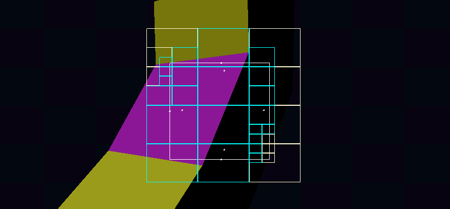
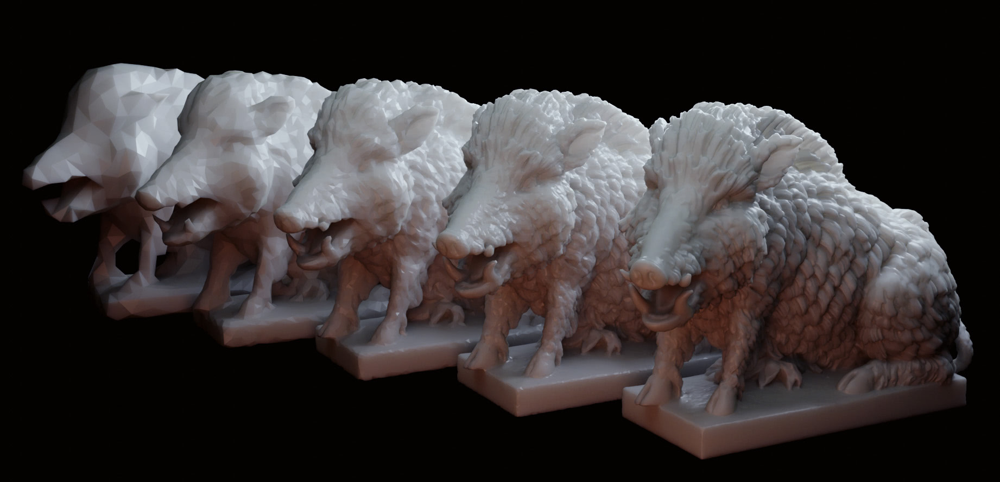

Achieving Soft shadows with traditional rendering techniques is far from being an accurate depiction of such phenomena in ray-traced scenes, but still significantly improves the overall look of the final output. Whereas soft shadowing in ray-tracing is an inherent property of tracing towards the larger surface of the light fixture, with a traditional rendering pipeline, there is no direct equivalent of this.
Experimenting with sampling the light fixture area over multiple frames and accumulating the result in screen-space has proven tricky, so usually simply accumulating the shadowed-ness of neighboring shadow-map texels is being used for a smoother overall look - but it doesn't come with all of the "real" properties of soft shadows, such as softness increasing with distance from the shadow-casting object. These things can be mimicked though by manually increasing the sampling radius depending on the depth difference between world-space and shadow map.
For sub-texel blending, we can simply subtract the fractional sub-texel position from the sample offsets and throw those positions into a weighting function, then accumulate the weighted samples and divide the sum by the combined weights.
In order to decrease the number of required samples per pixel, we usually cast a sparse but wide net of shadow samples. If the accumulated result is partially shadowed (so neither all, nor none of the samples are fully in shadow), we collect more samples to resolve the full quality soft shadow.
To determine the smoothing range to be used for distance-based shadow penumbra sizes, we gather the average depth difference from the initial net of shadow samples, use that to interpolate between the minimum and maximum smoothing radius and use the inverse of the resulting value as bounds for our weighting formula.
float calculate_weight(vec2 offset /* = sample_offset - subpixel_offset */, float inverse_radius)
{
float r = length(offset) * inverse_radius;
r *= r;
r = max(0.0, 1.0 - r * r);
return r;
}
Temporal Global-Illumination Accumulation via Reprojection
Anti-Aliasing is commonly implemented via temporal multi-sampling and reprojecting previous frames into the current view-space in modern rendering engines. However, the same techniques can be adapted to combat the rough surface ray-tracing noise by accumulating and bluring ray-traced Global-Illumination samples over multiple frames. As we're tracing into a voxelized version of our rendered scene, we can additionally apply a morton sequence to our voxelization offset positions, to further improve the visual quality of the reflected geometry.
As there's quite a bit of overlap, it's very convenient to combine the GI accumulation with the application of Temporal Anti-Aliasing, as e.g. the color and depth differences observed in one, can aid the blending in the other. Unlike the TAA-pass, however, GI is meant to blur on a much larger range in both time and space, as the voxel-traced samples are much more unreliable.
That's why we take a blurred version (restricted by depth differences) of the previous frame as the starting point of the current one and also allow neighboring samples from the current frame to be included in the final color of the current frame's GI as well. That way, GI can slowly "bleed" across surfaces, merely inhibited by stark differences in depth curvature (= edges) between the surrounding samples.
There is, however, one complication to consider here: Global-Illumination sample color is inherently linked to the albedo surface color of which it had been reflected, so without accounting for this surface textures will get very washed out and blurry, as their final color is indirectly influenced by the neighboring texels via their contributions to the blurred GI sample colors.
To combat this, we remove some of the textural information from the GI data, by simply dividing the accumulated GI color by the current frame's albedo color (offset by some constant, to limit the negative impact of incorrectly attributed samples) before storing the final accumulated sample. When referencing this accumulated GI texel during the next frame, we'll obviously have to re-apply the albedo color, before combining it with the newly acquired sample.
It's important to not fall back to the shaded output color here, but rather use the raw albedo color, as otherwise directional differences in shading would have an enormous side-effect on the accumulated Global-Illumination samples.
Another point to consider is that GI samples inherently cannot be interpolated between texels, as otherwise surface information from one surface may bleed into an unrelated other surface through such means.
The Troubled Seas of Voxel-Field Tracing
In contrast to ray tracing against lower poly versions of the rendered scene, where flat surfaces can trivially be represented accurately, there are additional complications with such areas as soon as such surfaces are rasterized to a grid that doesn't exactly conform the directional preferences of the surface plane.
First of all, when resolving from the world-space position in the rendered output to the voxel grid position, we may land inside or potentially even behind the voxelized equivalent.
Secondly, as flat surfaces that don't align neatly with the voxel grid, will inhibit at least some stair-stepping, we could - especially at extremely shallow viewing angles - accidentally encounter a ray intersection with the same surface, by running into such a stair-step.
Lastly, when tracing staring from a voxelized corner position, we may accidentally run into the voxelized remains of a close surface that lies in an irrelevant direction, which occupies our path by simply being too close to the origin surface.
To combat these points, we firstly offset our voxelized position in direction of the current surface normal. If we're still stuck inside a voxel at this point, we allow the voxel tracer a couple of steps through solid voxels, until we'd give up and assume the target voxel to be occupied.
This helps to achieve much more pleasing results than simply doing one or the other, as those factors combine nicely to combat the issues mentioned above pretty convincingly in all but exceptional edge-cases.
Cascaded Shadow Maps
Rendering sun shadows usually comes with a bit of a trade-off: As texture-resolution is limited, shadows may either be high quality, but fade out very quickly, or they fade out much futher away, but are much less detailed.
As a solution to this conundrum, which stays within the traditional rendering pipeline, we can simply render the world from multiple increasingly large orthographic views (biased towards the look direction). This results in having a view with high quality shadows for close-up detail, but also far-reaching shadow map coverage (with lesser quality where it matters less).
When applying the shadows to our scene, we can simply iterate through the list of our so-called cascades, until we end up in-bounds of the light matrix. This is handled as usual, we simply project the world-space position of our fragment to the view-projection matrix of the corresponding shadow-map and end up with a view-space coordinate into the associated texture.
In order to obscure the transitions between the different shadow-maps, we can employ a simple edge-fade, smoothly transitioning from one cascade to another.
for (; layer < 4; layer++)
{
// decoupled matrices, otherwise `lightSpacePos` can be calculated from the previous one
mat4x4 lightVP = lights[lightIdx + layer].vp;
vec4 lightSpacePos = lightVP * vec4(worldPosition, 1); // world position in light space
//lightSpacePos /= lightSpacePos.w; // not needed, orthographic!
float maxPos = max(abs(lightSpacePos.x), abs(lightSpacePos.y));
if (absMaxPos < 1) // if not out of bounds: stop!
break;
}
Renderer Architecture: Occlusion Culling
As we're generating multi-draw-indirect-buffer for rendered chunks from a compute shader, we'd like to reduce the number of objects being rendered to only consist of what's actually visible on screen.
One such approach is Frustum Culling - a simple technique, which attempts to reject objects behind or next to the View Frustum. It's fairly cheap and easy to implement - simply requiring a bounding box to be projected to the screen, but it's also inherently limited, as it can't combat overdraw.
struct gpu_lod_obj_info
{
gpu_lod_info lods[MaxLodCount]; // vertex, index buffer offsets, index count, request counts per LOD
vec3f maxBoundingVolume; // maximum dimensions of all LODs
uint32_t validLodMask; // bitmask of lods available to be loaded
vec3f centerOffset; // combines with `maxBoundingVolume` to a bounding box of all LODs
};
A more intricate and powerful technique is called Occlusion Culling. Here, we attempt to compare the depth of the projected object or bounding box against a reprojected depth buffer from the previous frame (which may additionally include some static close objects being re-rendered on top, to combat gaps in the reprojected depth buffer).
To make those lookups cheaper, we can construct a mip-chain from the depth buffer, which contains both the minimum and maximum depth value of the represented depth-buffer values (as a best- & worst-case depth). To make using this mip-chain much more straightforward (as we can't just assume that it's valid to split a certain texel down the middle and end up in the right place of the next mip), we can simply restrict the reprojected depth map size to the highest power of two in x and y less or equal to the depth buffer resolution.
Now, with the help of this depth buffer mip chain, we can easily check if the worst case depth of our object - so the closest it could possibly be, derived from its bounding box - can even occupy a certain area on screen (as opposed to being behind some other static object from the reprojected depth).
If our object's worst-case depth lands between the minimum and maximum depth represented by a certain mip texel and is at the edge of the bounding box, we can recursively check if the data stored in the underlying mip's texels makes this decision more obvious. Otherwise, we have to draw the object on screen.

Renderer Architecture: Objects & LODs
To achieve fully GPU driven render object streaming and for some significant throughput advancements, we'd only like to stream full chunks of static render objects to the GPU as a simple list of render object instances to generate a lodded multi-draw-indirect-buffer.
New chunks are simply supplied to the renderer as a list of such render object descriptors (position, rotation, scale). As the descriptors need to be able to look up information about the corresponding render objects, common to all render object instances (bounding boxes, vertex & buffer offsets, etc.), we want this lookup to be a simple index lookup on the GPU side, we allocate space for each distinct render object into a pool of Render Object Information.
struct render_object_instance
{
uint32_t id; // renderer turns this into a pool idx
vec3f pos, rotationAngles;
float scale;
};
Now, for every chunk the compute shader which generates the multi-draw-indirect-buffer is called once, with the offset and size of the corresponding list of render objects.
Here, we can now do all sorts of culling operations and determine the correct LOD to be used for this draw-call.
GPU driven LOD streaming
So far, we've simply assumed, that all LODs have been loaded and are available to the compute shader. However, we most likely don't even wanna stream in all of those LODs - at least in most cases.
By simply adding a requestCount to our Render Object Information for each object, we can simply atomically increment (can also be weighted by importance / size) whenever an LOD is being requested or drawn.
After each frame the CPU-side iterates over the occupied slots of the pool, finds the missing LODs with the most requests and forwards it to the asset-streaming subsystem, which will asynchronously read, prepare and upload the LOD's mesh data to the GPU. Prioritization is handled via the requestCount.
As even loaded LODs are marked this way, the unloading of LODs can be handled in a similar fashion. Obviously, the requestCount needs to be reset after every frame.
struct gpu_lod_info
{
uint32_t vertexOffset; // offset into the vertex mega-buffer.
uint32_t indexOffset; // offset into the index mega-buffer.
uint32_t indexCount; // number of indices to be drawn; 0: not loaded.
uint32_t requestedCount; // number of draw requests during the last frame.
};
Vegetation Rendering
Although vegetation may be very complex to portray accurately in a real-time rendering engine, there are a couple of different factors, that combine to give a relatively cheap, but still somewhat realistic impression of actual plant behavior. Tree trunks might be able to get away with relying on good rendering fundamentals, branches might be happy with the first two components, but especially large leaves require a whole set of tricks to achieve a convincing look. So, let's go step-by-step, from basic to specialized.
Good Fundamentals
As already mentioned, good fundamental rendering techniques can already carry some of the weight when dealing with large pieces of vegetation: So, normal-mapping, shadows and physically based rendering from other parts of the rendering pipeline are also very useful here. Normal-Mapping specifically is crucial to the look, mimicking complex geometric detail on the comparably flat surfaces of leaves and bark of trees.
For this demo, we've merely applied normal maps and simulated a linear block of shadow, as this wasn't too distracting from the overall picture when trying to experiment with the more specialized components.
Wind
Now, a concept that's relevant for all but the thickest tree trunks - especially leaves, twigs and smaller branches - is the property of swaying in the wind. To achieve somewhat realistic swaying behavior, every vertex data contains - apart from positional and normal vector information - a weight, representing how impacted the vertex should be by the local wind vector (global wind vectors will look too uniform over a large scene and break the illusion fairly quickly). If an area touches - or is very close to - the ground, the vertex weight is zero (we don't want vegetation to be floating around, whilst penetrating the ground!), and for the thinnest tips of leaves the weight is one.
For branches it may be sufficient to simply apply the wind vector directly, whereas for larger leaves it would be ideal to take the overall "springyness" of the leaf and the leaf-internal forces into account. This will (hopefully) be explored further in the future.
Backside Shadowing
As leaves are usually very thin, so, when viewing the unlit backside, we'd expect to see the light & shadows pass through the leaf structure to the other side. Thankfully gl_FrontFacing makes quick work of distinguishing between the front & backside, so we can simply flip the surface normal on the backside.
Subsurface Density
Lastly, leaves obviously have varying depth & density from the various veins passing through the leaf - even though we're simply representing the leaf with a bunch of flat planes. When viewing the leaf from the backside, we can derive our coloring based on this subsurface density and if the backside is being lit, alter the color of the light passing through the leaf to be darkened by the subsurface map.
Shader-Level (Bi-)Tangent Vector Calculation
Going on a slight tangent (😉), in order to apply normal maps to our vertex normals, we need tangent and bitangent vectors for our normal. These are commonly precalculated and stored alongside the other vertex data, but - as they can simply be calculated from the texture coordinate & world position of a mesh - they can also be calculated in a shader.
Geometry Shader (Bi-)Tangent Generation
As the tangent & bitangent vectors are identical within each triangle, they can simply be generated in a geometry shader from the world position and texture coordinates as follows.
For the sake of completeness and to validate, that our results are correct, we may also calculate tangent & bitangent vectors per fragment. Assuming decent occlusion culling, this is gonna result in a lot more work, as the same values will be generated for each fragment within a triangle.
Binary Serialization via Type-Seggregated Buffer Compression
In order to serialize generated assets into a custom model format, we need a minimal, fast & adaptable (de-)serialization API.
As discussed by gaffer on games, in order to achieve single-function de-/serialization per object, we introduce a similar API with a custom serialization-context input parameter.
ERROR_CHECK(io_value(context, self.verts)); // list of vec3f
ERROR_CHECK(io_value(context, self.triVertIndices)); // list of uint16_t
ERROR_CHECK(io_enum_as_int(context, self.mirrorAxis)); // enum
Our serialization context now collects values of different types into separate arrays and when reaching the end of the stream, we can simply RLE-compress, Reference & Integer-Encode (where applicable) all the collected values per type to get a significantly reduced output size. By collecting symbols on-the-fly into a recent, approximate common and most-frequent buffer (upgrading values inside those buffers as we collect them), we can further improve our ease of referencing common values (although, this process is fairly costly upon decompression as well). Rather than just immediately encoding the symbols in a bitstream (which isn't even possible with rANS), we can gather symbol-frequency statistics over the generated symbols into histograms & use those to entropy-encode the symbol stream.
Afterwards, the collected symbols can be written to a file-/memory-/network-bytestream of our choosing.
Further improvements may be achieved, by meta-compressing the type specific symbol streams, in order to possibly combine commonly succeeding symbols into a separate meta-symbol, etc.
One of the limitations of this approach, is that all values need to be collected first (need to reside in RAM at once, rather than being able to be streamed in & out concurrently), and can only be compressed afterwards. However, following a data-oriented approach, this is usually a faster way to do this (compared to the constant context switching of compression & structure descent) and presumably results in a much simpler implementation.
On Noise Patterns
When having a look at our original global-illumination implementation, there was a large amount of sporadic noise, that didn't result in visually consistent and seemingly smooth lighting. The noise source for this implementation had been a white-noise texture, that was being read at locations tied to the screen and world position & was being offset by a random vector for each frame.
Fully random noise (white noise) may lead to long-term convergence to the average, but not necessarily to a stable look over the short term, which is why usually blue (or even custom spacio-temporal) noise is used for such purposes.
This may lead to a more "patterned" looking noise texture, but also to a much higher rate of convergence to a visually consistent state.
Voxel Traced Reflections
As global-illumination rays are cast in the deferred section of the render loop, we have access to roughness information associated with the surface of the first bounce. When encountering shiny surfaces - if we're fully respecting and considering surface properties - this can lead to some nice voxel traced reflections. On a per-frame basis, these reflections clearly display the resolution limitations of the voxel grid, although by jiggeling the voxel grid offset slightly over time, one could achieve a much smoother look (as we can observe in a future article). Unfortunately the limited (but also time-dithered) color accuracy is quite obvious here, as we haven't overhauled the noise pipeline on that end yet.
Comparing Triangle-Collapse and Edge-Collapse
Sadly, Vertex-Elimination is too limited to really produce any interesting results with reasonably high-poly meshes, as it's decimation floor is relatively high for any given mesh. So, let's only have a look at how Edge-Collapse & Triangle-Collapse fare on some more complex models and what their characteristics are when pushed to their limits.
Triangle-Collapse
Edge-Collapse
With the bottom plate we can clearly see how Triangle-Collapse quickly starts eating away even at large overall shapes. In order to get this under control, more "globalist" error metrics would need to be employed - but Edge-Collapse would most certainly similarly benefit from this. On the other hand, this is actually the only case where Edge-Collapse also ends up damaging normals (by flipping the triangle vertex-order). Still, it's far less pronounced as Triangle-Collapse. Ignoring all the issues, I think I prefer Edge-Collapse here over Triangle-Collapse, as it resulted in much smoother looking decimation. I expected the thin paper geometry to cause issues, but this fortunately didn't occur.
Triangle-Collapse
Edge-Collapse

Here we can observe how Triangle-Collapse slowly arrives at an increasing number of problematic cases, where normals are accidentally flipped, whilst Edge-Collapse remains much more stable. I generally prefer the look of Triangle-Collapse here though - that is until it starts cutting of relevant areas entirely due to the more rapid increase of introduced error with every decimation step.
Triangle-Collapse
Edge-Collapse
Lastly, this is one of the cases where Triangle-Collapse (apart from the cut-off podium) produces a much nicer looking output - especially when focusing on the wings and hair of the statue. It somehow is able to achieve a somewhat painterly look on a lot of models.
Performance
As already discussed in the Edge-Collapse entry, Triangle-Collapse is quite a lot faster in its current implementation than Edge-Collapse. For a more direct head-to-head comparison, let's take a look at performance metrics from the bird model shown in the Vertex-Elimination post. Please note, that Vertex-Elimination isn't even reaching anything close to 1/8 the triangle count, as it pollutes its own geometry with too many unfavourable polygons during the decimation process.
Target Tris
Step
Edge-Collapse
Triangle-Collapse
Vertex-Elimination
Initial Error Calc
0.08962 s
0.09059 s
0.09093 s
Error Sorting
0.09088 s
0.05267 s
0.02669 s
1/8
Decimation
4.75858 s
2.21628 s
0.60876 s
1/8
Out Verts
39,555
39,651
166,400
1/8
Out Tris
79,121
79,120
332,812
1/64
Decimation
5.24914 s
2.39596 s
1/64
Out Verts
4,942
5,095
1/64
Out Tris
9,889
9,887
1/256
Decimation
5.24396 s
2.43889 s
1/256
Out Verts
1,234
1,409
1/256
Out Tris
2,471
2,472
[Model of the Cover & second Image: Eber by noe-3d.at is licensed under Creative Commons Attribution-NonCommercial]
Mesh Decimation by Edge Collapse
Triangle-Collapse may be a terrific Mesh Decimation methodology for some scenarios, but for our specific requirements (Terrain LODs with certain immutable vertices at the edge) it isn't optimal as its caveats lie exactly in the areas that hurt the most. So, let's take our "Collapse"-Strategy one step back and - rather than collapsing entire triangles into a single vertex, merely collapse a single edge at a time.
Given the similarity to Triangle-Collapse, the implementation follows along the same lines: Pick an edge, update all triangles that touched the removed vertex to point to the remaining vertex instead and optionally update the remaining vertex position to a new position. We can choose to either collapse onto the center position of the edge, or pick the position of the vertex we consider to be more relevant (in our case the latter strategy is only used if one of the vertices is immutable). If a triangle contains both of the vertices, it can be removed entirely.
Performance
Edge-Collapse is unfortunately yet again a bit slower than Triangle-Collapse and Vertex-Elimination. To collapse the upper body of a high-resolution antique statue scan to 1/256 the vertex count we get the following metrics:
Error Calculation: 2,370,474 edges / 790,872 verts in 9.19001 s (257,940 edges /s).
Edge Reference Sorting: 0.02447 s (32,316,578 /s).
Error Sorting: 0.21137 s (11,214,596 /s).
Triangle Collapse: Removed 787,729 verts / 1573,439 tris in 18.53234 s (42,505 verts /s).
Decimated: 790,872 verts, 1,579,609 tris to 3,143 verts, 6,170 tris.
This is unfortunately quite a lot slower for large models, but for our use case of decimating relatively small and low-complexity terrain geometry-fragments, this should still be acceptable.
Complications
Edge-Collapse isn't really more flexible, but more robust than Triangle-Collapse. Like Triangle-Collapse the strategy necessarily introduces averaged vertex positions into the mesh, but this didn't really cause any trouble with vertex-order or massive differences in any relevant scenarios yet. Sure, it's much slower - especially than the blazingly fast Vertex-Elimination, but it's robust and doesn't catch on fire if the source geometry isn't exactly to the specific tastes of the algorithm.
[Model of the Cover Image: Relief Depiction of Ma'at by IPCH Digitization Lab is licensed under Creative Commons Attribution]
Mesh Decimation by Triangle Collapse
As our Vertex-Elimination Decimation had too many caveats to be used as a general purpose decimation algorithm - and even ran into problems with our target of terrain decimation - we'll have to come up with a different solution. So, let's try to address the largest problems we ran into: Dependency on "nice" geometry, that we'd end up ruining eventually anyways & needing to do extra steps to fix vertex-ordering in triangles, if requested.
So how about if we don't start with vertices or lines - which may be part of complex polygons, but rather with triangles: Simply picking a triangle and collapsing it onto its barycenter should allow us to decimate even the most complex of meshes - with the downside, that with every collapse operation, we necessarily introduce a certain amount of inaccuracy, which may carry over into future collapses.
We can simply treat all of a triangle's vertices as references to the same remaining (now position-adjusted) result-vertex and ensure that all of their distinct neighbors reference this replacement vertex instead. If a neighbor triangle shares more than one vertex with our current triangle it can also be removed. We would assume triangle vertex order to stay consistent, as we're simply collapsing three vertices into one and don't really create any new vertices, but as no vertex position is "safe" from our decimation, it may occur, that triangles just happen to be collapsed into new positions that result in a flip of a triangle's vertex-order direction.
Our goal of restricting which vertices remain in place is slightly more difficult here, as we need to either not collapse any triangles that feature vertices that may not be moved or - if only one vertex may not be moved - collapse onto that vertex. In practice both of those strategies aren't flawless, especially since our mesh-generation scenario has to deal with a ton of open edges that may not be moved and need to line up exactly with another mesh's vertices - and the better of the two strategies happens to be the "not touching triangles with immutable vertices" one, which ends up severely limiting the level of decimation possible from a given input set of partially locked vertices.
Error Calculation
The error metric to prioritize triangles that collapse with the least amount of assumed visual difference can be fairly straightforward: Simply summing up the area of the 3d pyramid between the collapsed and non-collapsed vertex positions for each of the affected triangles (except the collapsed one) suffices.
Performance
Triangle-Collapse is unfortunately quite a lot slower than Vertex-Elimination, but still pretty fast. To collapse the upper body of a high-resolution antique statue scan to 1/256 the vertex count we get the following metrics:
Error Calculation: 1,579,609 tris / 790,872 verts in 0.58253 s (2,711,622 tris /s).
Error Sorting: 0.13659 s (11,564,442 /s).
Triangle Collapse: Removed 787,256 verts / 1,573,441 tris in 7.59792 s (103,614 verts /s).
Decimated: 790,872 verts, 1,579,609 tris to 3,616 verts, 6,168 tris.
The performance of Triangle-Collapse also benefits from the same chunked list data-structure, as implemented for Vertex-Elimination. For a more direct comparison, here's the metrics from running a light 1/8 decimation on the same model as in the Vertex-Elimination entry.
Error Calculation: 632,974 tris / 316,481 verts in 0.23238 s (2,723,874.8 tris /s).
Error Sorting: 0.05267 s (12,018,053 /s).
Triangle Collapse: Removed 276,830 verts / 553,854 tris in 2.21628 s (124,907.4 verts /s).
Decimated: 316,481 verts, 632,974 tris tris to 39,651 verts, 79,120 tris.
Complications
As already discussed, although much more flexible than Vertex-Elimination, Triangle-Collapse isn't without it's flaws. However, these are mostly limited to triangle vertex-ordering and necessarily introducing new vertex positions with every triangle collapse, so all-in-all it may be very much suitable for some use-cases. Triangle-Collapse can produce almost painterly features and is sometimes able to preserve sharp details much longer than other competing strategies, but unfortunately it wasn't a perfect match for ours.
[Model in the Image below: Abecedary tablet by IPCH Digitization Lab is licensed under Creative Commons Attribution-NonCommercial]
Mesh Decimation by Vertex Elimination
Since Border-Alternating Terrain LODs require full control over which triangles are decimated, a custom mesh decimation algorithm is needed - and even if not, it'd be very convenient to have a fast, reliable & flexible way of decimation at our finger tips.
So decimating a mesh by eliminating the least-relevant vertices seemed like a novel & fast solution to the problem. But first, how do we want to eliminate those least-relevant vertices?
Let's assume, we have this geometry-fragment, and we've determined, that the tip of this shape is the vertex we'd like to eliminate. In order to remove said vertex from our object, we have to ensure, that all neighboring vertices that previously connected to the tip do now connect to one another. So, by observing the other vertices in all triangles connected with our chosen vertex, we can construct the polygon(s) of the resulting area. After sorting neighboring triangles into coherent polygons by finding common (= overlapping) vertices (which can be a bit tricky with "open" meshes or at the rims of mesh fragments, as there may not be any further overlapping vertices after a certain point, but still some triangles left to process), the polygon(s) can simply be triangulated and the chosen vertex has been eliminated.
As simple as this may seem, it sadly isn't that easy to implement in practice: Polygon triangulation in 3D isn't really a thing if the vertices don't all lie on a flat plane and even 2D polygon triangulation isn't trivial at all. As we're merely evaluating the suitability of this approach, we'll simply ignore those cases for now, and disallow any vertices from being eliminated if this would result in such a horrible case.
Regarding our goal of being able to leave singular vertices untouched, to line up with higher-fidelity LODs, this can be achieved very easily here, as the decimation procedure happens per-vertex anyways.
Error Calculation
In order to prioritize vertices that result in minimal change to the mesh, we need to define an error function. Fortunately, this is rather easy: The error of removing the vertex at the tip can be formulated as the area between the re-triangulated base and the tip (= sum of the areas of the tetrahedron between the generated triangle and tip). As there's no singular valid triangulation of a polygon, this calculation unfortunately has to be repeated for all vertices and can't be blindly carried over to neighbors, as they may end up with a different triangulation, that would result in a different error value. To demonstrate, that not only one valid triangulation exists, let's consider the case of the following opening and its two different triangulations:
Performance
This approach is actually blazingly fast, even when forced to re-triangulate the resulting areas from the perspective of each vertex. To decimate the Statue pictured at the top of this entry (left) to the point where all vertex eliminations would result in horrific polygons (right), this is what we end up with:
Error Calculation (incl. triangulation of base): 632,974 tris in 0.06161 s (3,449,320 non-skipped /s).
Error Sorting: 0.02669 s (11,859,484 /s).
Elimination & Re-Triangulation for 150,081 verts: 0.60876 s (246,536 /s).
Decimated 316,481 verts, 632,974 tris to 166,400 verts, 332,812 tris. (removed 15,0081 verts, 300,162 tris)
This required an incredibly fast chunked list data-structure to be written, which allows for blazingly fast random removals & inserts (removing old error values in a sorted list, inserting new error values at the correct position) and a bunch of other little tricks.
Complications
What should now be somewhat apparent from the Performance Output above is, that many of the vertices needed to be skipped, as it would've been too complex to triangulate the resulting geometry. This usually isn't as terrible with smaller models, but heavily impacts the flexibility of this algorithm. What can be somewhat worked around, but isn't particularly pleasing about this approach is, that triangle vertex-ordering (which is sometimes used to determine normal directions and allows for front- or backface culling) isn't automatically preserved and needs to be fixed during the decimation process, if this behavior is relevant.
[Model of the Cover Image: Grabfigur by noe-3d.at is licensed under Creative Commons Attribution-NonCommercial] [Model in the Image below: Abecedary tablet by IPCH Digitization Lab is licensed under Creative Commons Attribution-NonCommercial]
Border-Alternating Terrain LODs
With connected geometry - like terrain geometry - simply dissecting the model into tiles and providing various LODs for each tile (with larger tile sizes for lower quality LODs) unfortunately leads to problems whenever different LOD layers meet, as with a naive approach LOD levels would disagree at their borders about the level of fidelity. Forcing higher quality rims onto lower quality levels leads to an escalation, where even the lowest quality LODs would need to provide the highest quality borders, even though they would never actually border any of the highest quality levels, but as every lower level needs to be able to connect to a higher and lower quality level seamlessly, this forces highest quality borders onto all layers, which will increase the geometric detail of the lowest-quality LODs so much, that it entirely defeats the purpose of having LOD levels in the first place, as all of the detail is spent on irrelevant high-fidelity borders.
In order to resolve this, LOD levels can't share borders across all layers. This makes streaming LODs and generating LODs a lot more complex, but completely eliminates the issue at hand: Let's assume we have this lowest-quality LOD0 of our terrain.
If we want to load a segment of LOD0, we need to split it into its four children, as otherwise we'd end up rendering some segments twice: Once with LOD0 and more with LOD1.
Now, to address the issue discussed above: We need to choose a different boundary, at which higher-resolution LODs line up with LOD1. So, let's lock the vertices on the dark-turquoise lines to match the fidelity of LOD2.
Let's assume the worst case: We're interested in more detail in the selected tile of LOD2. Simply loading in this tile, we would disagree with the neighboring tiles of LOD1 on the level-of-fidelity at the two borders highlighted in white.
To address this, loading the tile highlighted in white forces the turquoise tiles to be loaded at the same LOD, as they share the same dark-turquoise square.
In order to again address the issue of sharing boundaries between LOD levels, we force the vertices on the dark-green lines to match the vertices at LOD3.
Let's again assume one of the more interesting cases, and let's say we want to load a higher quality LOD at the tile highlighted in green. Similar as before, this leads to a disagreement on the level of fidelity on the borders highlighed in white.
As discussed before, loading in the tile highlighted in white forces the tiles in green to be loaded as well. Actually any of these 4 tiles being loaded would force the remaining 3 tiles to be loaded in as well.
As two of the parent nodes of those nodes haven't been loaded in already, this also forces those parent nodes to be loaded in at a higher LOD as well, namely LOD2.
Implementing this intra-tile dependency isn't actually as tricky as it may seem, as it's always very straightforward to determine, which of the neighboring tiles need to be loaded in as well. A simple look-up-table suffices to store the vectors to the required neighboring ("sibling") tiles from the perspective of each child-index of a parent tile:
static const vec2i8 siblings_from_child_idx[4][3]{
{{-1, -1}, {0, -1}, {-1, 0}}, // top left
{{0, -1}, {1, -1}, {1, 0}}, // top right
{{-1, 0}, {-1, 1}, {0, 1}}, // bottom left
{{1, 0}, {0, 1}, {1, 1}} // bottom right
};
Now one can simply recursively iterate over tiles by starting at the root, splitting every tile that is sufficiently close and loading in all sibling tiles that need to be loaded alongside a given child.
Handling Procedural Geometry & Mesh Fragments
As we always need to know the vertices higher-resolution LOD layers in advance, it's highly recommended to generate such LODs with a bottom-up approach, as otherwise it's much more cumbersome to force our current LOD's vertices to match up with higher-resolution ones we haven't even seen yet. When doing so for partially loaded Meshes (especially common when procedurally generating or manipulating the underlying geometry), generating higher LOD layers with matching outer vertices (yes, not the inner vertices, that match up with higher LODs, but ones that need to match up with neighboring tiles of the same LOD level) can be tricky to handle. This is because neighboring LODs will be decimated separately, but we need to ensure that both we and them pick the same vertex positions on the rims of our tiles, as we'd end up with gaps between triangles otherwise. An easy strategy to handle this, is to manually Edge-Collapse every second vertex on the rim onto its neighbor, then mark the remaining rim vertices as immutable, before the entire tile is decimated to the desired level. This doesn't necessarily result in the most pleasing geometry, but it ensures consistency between the tiles and prevents any gaps from forming.
Single Bounce Voxel Traced Global Illumination
Now, that we've voxelized our shaded scene, the main deferred pass can be followed up by an additively blended global illumination pass. In this pass we use the same g-buffers as inputs as in the regular deferred shading pass, but instead of looking up lights and shading based on surface color and normal, we take the world-position as a starting point, reflect the camera-to-world-space-vector at the surface normal, move slightly (with a small random offset) into the derived direction (until we're no longer in the vicinity of neighboring voxels), add some random rotation to the direction vector (based on material roughness) and trace through the voxelized geometry until we either run out of steps (in this case, we assume, that we've hit the skybox and sample from it), or we've hit a shaded or unshaded populated voxel, in which case we derive the color from said voxel.
Even just sampling with one ray per pixel results in reasonably smooth results when viewed at sufficiently high framerates. This will eventually be smoothed out by TAA, so screenshots won't end up looking horribly noisy in the final version.
Effective Voxel Tracing
Given a voxel position pos (i.e. [1, 4, 7] in the voxel field [0, 0, 0] ~ [10, 10, 10]) and direction dir, with the sampled voxel being cpos = pos + t * dir, we can immediately transition to the next voxel by using the following basic formula:
Generating Randomly Rotated Vectors For Rough Surfaces
Randomly rotating arbitrary vectors can be somewhat cumbersome, we use the following approach:
Take the unit up-vector ([0, 0, -1] in our case)
Randomly rotate it in x and y direction (or whatever two directions aren't up in your preferred coordinate system)
Generate a mapping matrix, that rotates the unit up-vector onto our original vector using the previously discussed RotateAlignVectors function.
Transform the rotated up-vector with the mapping matrix
As this doesn't actually rotate arbitrary vectors but merely aligns the rotated vector with the up-vector, this approach doesn't suffer from the same issues as more straightforward implementations.
Hardware Voxelization
To be able to cheaply trace rays through the rendered scene, all static geometry is hardware voxelized through a clever combination of multisample anti-aliasing (MSAA) and a geometry shader that maximizes rasterized surface area.
As the color-resolution of the voxelized scene doesn't need to be particularly high or temporally stable, voxel colors are dithered and logarithmically encoded with only 8-bits per voxel (3 bits red, 3 bits green, 2 bits blue with 0 = no voxel).
Performant shading is provided through a world-space-clustering of the voxelized area, which works very similarly to the view-space clustering discussed previously, but instead of splitting the view-frustum into smaller pieces, the entire world-space in voxelizer range is split into regions, approximated by bounding spheres (if the voxelized area doesn't rotate, the bounding sphere calculation only needs to happen once, as all subsequent transforms are merely translations of the pre-existing clusters), then the bounding spheres are intersected with the light frustums in a cpu-side lighting pre-pass and stored in a separate lookup table.
Clustered Deferred Lighting
To significantly reduce the number of required shadow map lookups in a fragment shader, the view frustum can be subdivided into many small frustums in a pre-process (which we approximate by their bounding sphere). We can now check for the intersection of the light-view-frustum and view-frustum-segment-bounding-sphere and reference the relevant light indices of a given segment in a small lookup table.
Retrieving the corresponding cluster index in the fragment shader is very straightforward, as the only information required to resolve the fragment to a cluster is the screenspace texture coordinate and linearized depth ratio between the near and far plane. All of these inputs are already commonplace in deferred shading setups.
Additionally, such a lookup can easily be utilized to implement a basic volumetric lighting shader.
Procedurally generated PBR textures
To fill our procedurally generated worlds with unique looking environments, we render the corresponding colors for a given region directly into the texture atlas.
As material indexes are directly passed to the shader, alongside the world-position of the corresponding terrain, we can select the correct type of texture and procedurally generate the values to the atlas. This results in a lot of variety, even if the same material is used:
Snowy Rocks
Ice
Blending is done on by simply applying a noise function to the barycentric coordinates that are used to fetch the per-vertex material index in the fragment shader from a texture. Sadly it's currently not possible to use different noise patterns for different kinds of material combinations, but the current noise pattern results in very pleasing material transitions already (see video in the header)
This way we can create a wide variety of procedural textures and selectively apply them to the underlying terrain. These are all of the material types we currently offer:
Improving and Optimizing the Texture Atlas
The original implementation was already capable of processing hundreds of thousands of triangles per second, but the utilization of the texture area wasn't particularly good, as the coverage quadtree initially preferred placing triangle clusters at high-layer node positions. This left arbitrarily sized holes in the quadtree that are neither particularly easy to find, when looking for available space for future clusters nor necessarily good spots to place clusters into, as the total available area is quickly fragmented by the first couple of clusters.
We'd much prefer clusters to be placed closer to existing clusters, so we'll modify the atlas slightly: After the final dimensions have been found, we allow the quadtree to attempt to move the current bounds to the top left by one node per layer if possible. This achieves much better atlas coverage - still not optimal, but improved to the point that models with double the unit-size can consistently fit into the atlas now. Apart from the coverage benefits, for some models this ends up positively impacting the runtime performance as well, as it's much faster to find empty spots with the improved coverage.
After a bunch of smaller optimization (mostly bloom-filters to avoid costlier randomish-memory-access-dependent-conditionals) we're somewhere between handling 500k - 1M Triangles per Second on a single thread.
Stanford Dragon Texture Coordinates & Model Render
To actually get a decent performance benchmark of the texture atlas, I fed it the entire stanford dragon model (871k Triangles), as well as a bunch of other large standard models (like a simplified version of Stanford Lucy).
2.01443 s (432,422 triangles per second) without moving cluster bounds to the top-left
0.87905 s (990,936 triangles per second) with moving cluster bounds to the top-left
Although, with the simplified Stanford Lucy model however (28k Triangles), the old method appears still to be faster - probably because of the larger variance in terms of triangle area:
0.02538 s (1,105,358 triangles per second) without moving cluster bounds to the top-left
0.05534 s (506,846.8 triangles per second) with moving cluster bounds to the top-left
Fast Texture Atlas for Procedural Geometry
Since world chunks are going to be represented with consistent, but procedural geometry, we need an efficient way of generating texture information for chunks to make manual changes and unique-looking locations possible. To sample and store the corresponding texture, we need an efficient way of generating texture coordinates for our procedural geometry.
As many existing texture atlas implementations aren't particularly fast or assume that the geometry already comes with UV partitioning and texture coordinates that only need to be assembled into one big atlas, I chose to implement a new texture atlas system for the engine.
The foundation of the texture atlas is a coverage-quadtree where nodes are either empty, partially-covered or full. Nodes are stored in a large buffer as there's no need to stream information on demand. The last layer is merely represented as a large bitmap, rather than the actual nodes containing information about the pixel contents. Utilizing this coverage-quadtree it's fairly straightforward to check if a certain amount of space is currently available in the atlas.
The atlas procedure consists of two steps:
Setup
Add all triangles with 3d position and vertex indexes to the atlas. The atlas calculates the side lengths and angles of the triangle and takes note of existing triangles that share an edge with the current one.
Texture Coordinate Generation
After all triangles have been added, they are first sorted by area. Then chunks of triangles are attempted to be added to the atlas branching out from the initial large triangle's edges.
There's some special cases that have to be handled here, like when all three vertexes of a triangle are already present in the atlas and connecting them into a new triangle would result in a reasonable approximation of sizes and angles in respect to the original 3d geometry. Likewise, in order to ensure that the resulting areas don't get out of hand with curved geometry, as angles are used to construct the 2d triangles in the texture atlas and the resulting area may slowly creep up or down in size compared to their 3d counterparts, mismatching triangles are rejected from the current batch and will either be added separately or as part of another triangle-cluster.
Whenever no more connecting triangles would fit into the area available in the texture atlas, triangle bounds are marked as covered and we move on to the next possible collection of triangles - starting with the next largest triangle that hasn't been placed yet.
Obviously this doesn't result in optimal utililzation of the texture atlas, especially as the bounding rectangle of a triangle is a terrible estimate of it's actual coverage, but this comes with a large performance benefit, as no triangle rasterization is required and the texture generation part can be offloaded to the GPU.
Pixels, Shell Texturing & Grass Height
Achieving tripple-A quality graphics isn't entirely feasible with just the limited time of one person, so choosing a distinct, pleasant, and lower-fidelity art-style is very important. To force myself to think more about the broad picture than the low-level details, I halved the display resolution, using my trusty old aliasing-pixelartify algorithm for a neat pixely look.
Now to the fun part: Moss. Well, shell texturing.
To supplement the grass and enable moss growth on rocks and other similar surfaces, we create a vegetation-height map that is a half-terrain-resolution approximation of the height of grass - or only moss, if the values are too low to allow grass to grow. We can now color the grass depending on the length to achieve some more visual interest.
For moss, we create two LODs of instanced heightmap textures with varying height attribute. We create a moss height, normal direction & color change texture that is statically used for all moss and sample the depth from this texture in the fragment shader to conditionally discard (I don't want to, but alpha blending would be a lot worse) fragments.
Giving the height channel some bumps here and there and sampling a different color depending on the moss height leaves us with a nice fluffy mossy texture that nicely complements the grass.
Grass Rendering & Chunk View Culling
Flat untextured terrain however isn't particularly pleasing to look at, so - after implementing a chunk view culling system and reducing the draw-calls for terrain rendering to one draw-call per chunk type and refactoring the renderer a bit, let's have a look at grass rendering.
I'm not the biggest fan of alpha textured grass rendering as the constant overdraw fragment discarding sounds very unpleasant to me. As modern GPUs are capable of rendering a lot of instanced geometry very quickly and having individual segmented blades of grass allows for nice curving grass in the wind, we'll use that approach. Depending on how close the chunk containing the grass is to the camera, we'll use a different LOD on the grass segmentation as even reasonably close chunks can visually represent blades of grass with just a single triangle without a perceptual loss in quality.
This doesn't cover chunks yet, that are further off in the distance, but depending on how well we can tune the shaders later on, we might be able to either render billboards with large amounts of grass, or even fake the existence of grass entirely with a decent grass-landscape texture.
Terrain Chunk Streaming & Atmospheric Effects
In order to traverse such a large scale terrain, LOD & streaming need to be considered immediately. Chunks of different sizes are streamed into fixed-size textures and are dynamically loaded when needed.
Whenever a large chunks would contain a chunk with vertexes that are closer than a set distance from the camera, the chunk is split and the contained chunks of higher fidelity are streamed in.
To reduce the pop-in artifacts usually seen in even tripple-A productions, we use local maxima - rather than average terrain height - to construct LODs.
Obviously this leaves visible gaps in the landscape wherever multiple chunk-types meet, but we'll deal with specific meshes to solve this problem at a later date.
A low LOD texture atlas
Atmospheric Effects
The sun position is now 'rotated' into the coordinate space mapped around the 'flat' planet and camera position using a vector alignment matrix:
The way the sun passes through the atmosphere is approximated with an iterative shader that draws an equirectangular view and approximates rayleigh and mie scattering with a fixed number of samples. The scale of the planetary system and atmosphere have been adjusted to achieve earth-like atmospheric conditions.
Micro-Biome Extraction
After the terrain has been generated and eroded, regions need to be classified into biomes based on the physical properties of their surroundings. To calculate these biomes like various grass types wherever the top soil is grass a noise map can be sampled. However this isn't entirely accurate as especially regional & global elevation changes and water proximity can influence biome parameters significantly.
Therefore we compute a signed distance field of water and one that maps terrain height, blur the height map over a large area and then compute the local difference to an areas neighbors. This leaves us with the water map and the map shown above for local terrain elevation changes.
Using these two maps and a noise buffer, we can derive micro-biome features like mossy stones near water or in crests, small puddles can be turned to mud, large elevation change inhibit the growth of trees or tall grass, ...
Wind Erosion
With our newly developed surface wind simulation, we can now erode the surface terrain. Terrain that's close to the wind height will be eroded more than terrain that's further from it and wind speeds influence how far particles are dragged when eroded. The various terrain layers have different properties of how easily they can be erroded by wind & water.
As the eroded particles are dragged through the wind, the terrain is iteratively checked for matching height as the particles slowly descend based on their weight.
Similarly to the wind simulation, eroded particles are added onto a separate buffer and are applied to the new terrain after all cells have completed their erosion procedure.
Simulating Wind
In order to arrive at realistic wind conditions to drive wind erosion, both atmospheric and surface conditions must be simulated. The atmospheric wind simply boils down to
Generally air is dragged in the opposite direction of the planetary rotation through the coriolis force.
The air in each atmospheric cell warms up based on solar energy reaching the surface (and slowly cools to the temperature of outer space when there's no incoming solar energy)
Based on the temperature and the air density at any position, calculate the pressure
Move air-mass (density) velocity around to attempt to equally distribute air pressure
The last step can be applied iteratively to support fine-grained air movements. Whilst iterating the exiting wind buffer, resulting wind is accumulated in a separate buffer to be applied after all cells have been processed.
One trick that specifically helped simulating sub-cell movements over multiple iterations - by slightly breaking the laws of physics - was to multiply the wind speeds in cells that don't have enough wind speed to make any pressure move from one cell to the next. This eventually tips the scales and makes the wind in those low pressure cells travel small distances over large amounts of time consistently.
Atmospheric Air Density and Wind Speed Vectors
Surface Wind
Surface wind derives its temperature from the reflectivity and temperature emission of the underlying material. Surface Wind can be imaginged as a sheet of cloth that's being dragged over the terrain surface. Wind Speeds slow down (in my implementation even reverse slightly) when moving against higher terrain. This may result in the wind height being raised at a given position, or the wind preferring another direction over the current brute-force approach.
Falling winds to the contrary even enjoy a slight speedup to their wind speeds. This results in pressure zones being separated by mountain ranges whilst wind bursts through the cracks in order to equalise the pressure on both sides.
Surface winds are slightly dragged along with the general atmospheric wind.
Surface Air Density and Wind Speed Vectors
Orbital Dynamics
In order to have semi-accurate climatic conditions producing terrain with only one hot and one cold zone, an somewhat excentric elliptic orbital path with fine tuned rotational velocity and direction is required. Solving orbital dynamics formulas - even with a fixed star that isn't affected by the satellites mass - proved quite difficult however.
In Polar Coordinates, the orbital distance from the origin at angle theta with orbital parameters a and b can be expressed like this:
radius(theta) := (a * (1 - b * b)) / (1 + b * cos(theta))
This alone doesn't help much however, as the velocity at each position can easily be calculated, but woulnd't translate to a closed form solution and I didn't want to resort to step-wise simulation that'd be hard to rely on or accurately predict with different time steps. So, I was able to construct a function angle(time) to derive the radius by pluggin the result into the radius function:
In order to arrive at a combined mass that actually produces a period of 2 * pi, we have to calculate the mass from orbital parameter a:
combinedMass(a) := (2 * a * pi / 2) / (pi * pi)
As the combined mass of the two orbital bodies doesn't change with the system, it can be calculated on initialization when setting the other orbital parameters.
Planets, Average Solar Energy on the Surface, Current Solar Energy
Hydrolic Erosion
The layered terrain can be eroded using simulated water-droplets that carry material based amounts of sediment around. Finding the path to the deepest reachable point (or until all water has evaporated) for each block of terrain is vastly faster than simulating only one step at a time, but produces much rougher terrain than stepwise erosion. Stepwise erosion smoothes out the terrain and forms large water streams that then decend down to the valleys, where the small crests created from the first few water droplets in the decent-per-droplet approach won't widen and will preferrably be used by later droplets that run down similar paths, not resulting in broadening of common water paths.
Layered Terrain Before / After Water Erosion
Layer Based Terrain
Terrain is built in layers, the bottom layer is non-erodable bedrock. Depending on a signed-distance field, a noise layer and two cubic slopes a certain height of terrain of a given layer will be added on top of the existing terrain. The signed distance field chooses the min and max value from the two cubic slopes (basically a min- and max height) and the noise value (between 0 and 1) is used to smoothly interpolate between those two values. The generated terrain is rough at first, but erosion will massively improve and shape those layers later.
const float_t min = a_min * x * x * x + b_min * x * x + c_min * x + d_min;
const float_t max = a_max * x * x * x + b_max * x * x + c_max * x + d_max;
const float_t height = lerp(min, max, noiseValue);